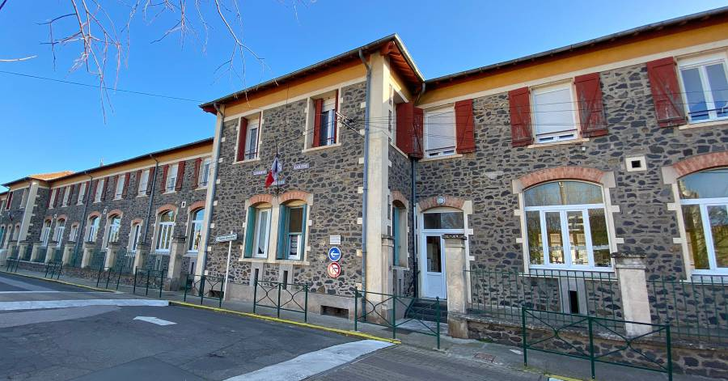
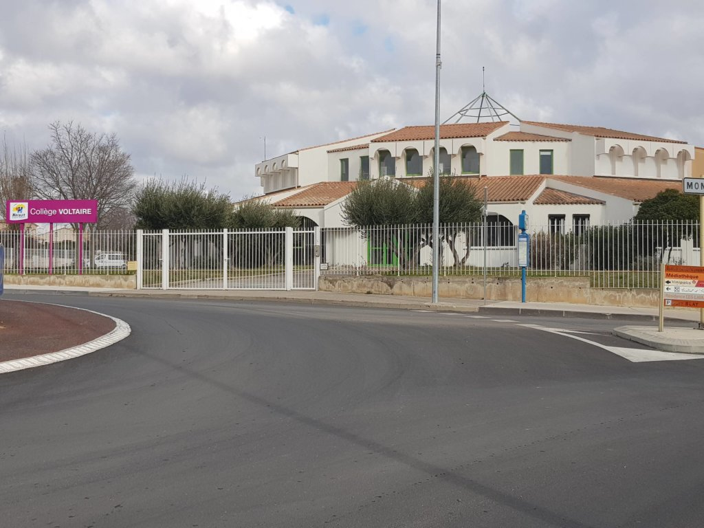
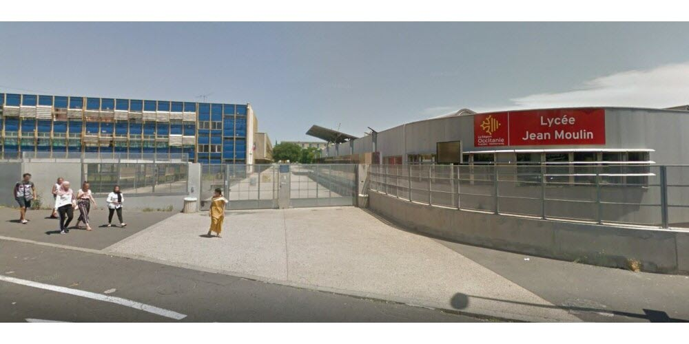

Fabre Tom
Étudiant en informatique - Développement d'applications
En savoir plus sur moiActuellement en formation BTS SIO option SLAM à distance via le CNED
Je souhaite être Déveleppeur Web ou Développeur d'application.

A PROPOS DE MOI
Salut ! Je suis Fabre Tom, Programmeur Junior et étudiant au CNED. Mes stages m'ont offert une expérience variée en entreprise, notamment chez "Altrad" et "Arcade".
Mes compétences incluent le codage, la programmation, le service informatique, et l'administration réseaux. Actuellement, je poursuis un BTS SLAM.
MON PARCOURS
-
2008 - 2016
Étude primaire de la petite section au CM2.
-
2016 - 2020
Étude générale de la 6ème à la 3ème. Brevet obtenu
-
2020 - 2023
Préparation d'un Baccalauréat professionnel en Système Numérique et Informatique. Bac obtenu - Mention Assez Bien
-
2023 - 2024
Préparation d'une Mention Complémentaire en Cybersécurité. Mention Très Bien
-
2024 - ...
Étude et préparation d'un BTS SIO option SLAM.
COMPÉTENCES
(en cour d'apprentissage)
Réalisations
Contact
Pour toute question ou opportunité, n'hésitez pas à me contacter en cliquant ci-dessous.